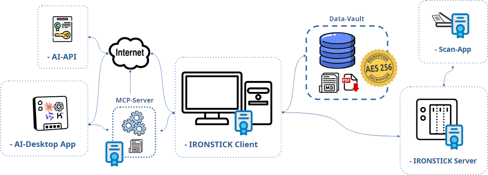
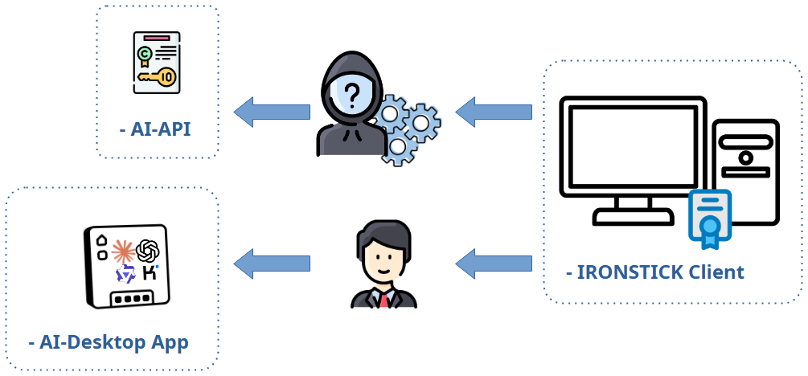
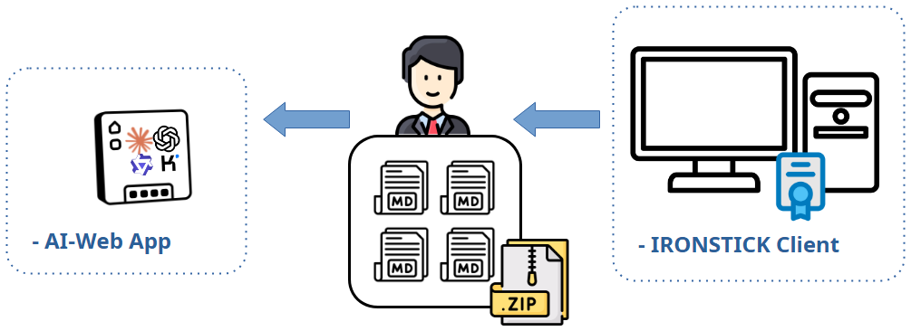
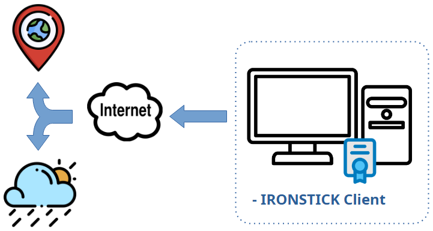
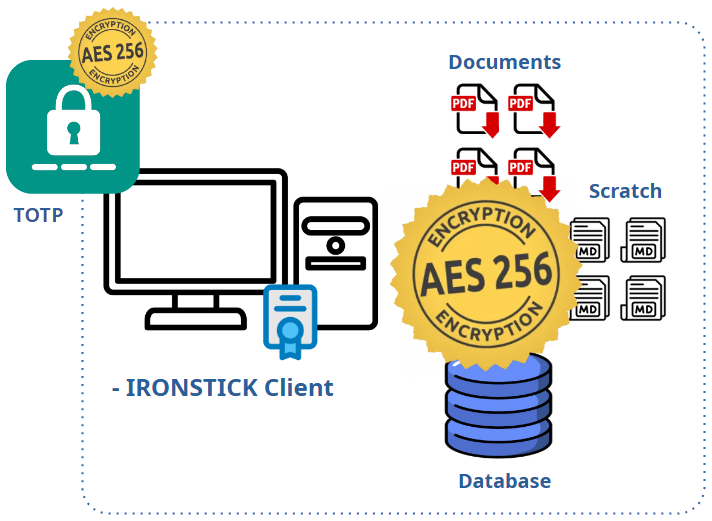
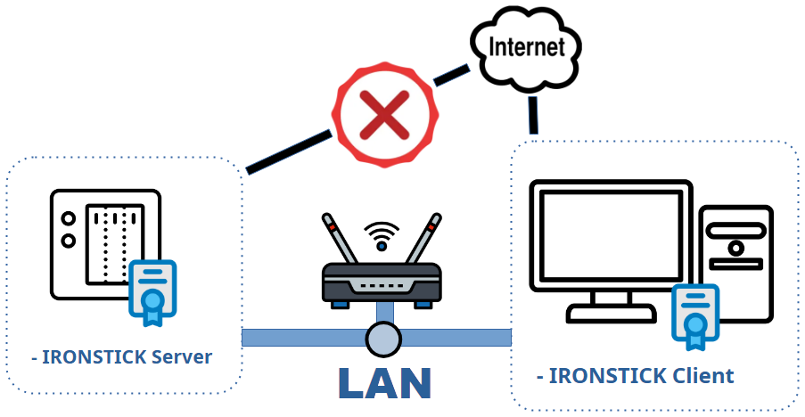

Dichiarazione GDPR sui flussi di dati
Rapporti con modelli linguistici di grandi dimensioni (LLM) esterni
Descrizione fattuale, ricavata dal codice, di ogni percorso attraverso il quale
i dati escono da IRONSTICK verso un LLM esterno, di che cosa esattamente viene trasmesso, in quale forma
e di dove si applica il livello di pseudonimizzazione. Edizione desktop per Windows. Il presente documento
descrive esclusivamente il comportamento di IRONSTICK — ciò che il fornitore di IA fa con i dati
ricevuti è disciplinato esclusivamente dalle condizioni proprie del fornitore (le condizioni e le
informative sulla privacy dei fornitori configurati dall'utente — Google, Alibaba Cloud,
Moonshot AI, OpenAI e/o Anthropic), che l'utente deve esaminare separatamente.
1. Ambito ed endpoint

Le chiamate IA esterne all'interno dell'app sono dirette al fornitore che la cascata automatica
sta utilizzando in quel momento. L'utente può configurare fino a quattro fornitori; ogni
fornitore configurato viene utilizzato automaticamente nel seguente ordine fisso, orientato al
risparmio dei costi: Qwen (Alibaba Cloud) → Kimi (Moonshot AI) →
ChatGPT (OpenAI) → Claude (Anthropic). A ogni avvio del programma IRONSTICK
verifica quali di essi rispondono; se nel corso della giornata una quota o un credito si esaurisce, oppure
un fornitore smette di rispondere, la medesima richiesta viene ripetuta con il fornitore
successivo, che viene poi utilizzato per il resto della giornata. Il contenuto trasmesso
è identico per ogni fornitore (dalla sezione 3 in poi: pseudonimizzato dal
router, consenso, registro di audit). Gli endpoint sono:
- Claude:
POST https://api.anthropic.com/v1/messages,
con la chiave API propria dell'utente.
- ChatGPT:
POST https://api.openai.com/v1/chat/completions,
con la chiave API propria dell'utente.
- Qwen:
POST https://dashscope-intl.aliyuncs.com/compatible-mode/v1/chat/completions
(Alibaba Cloud Model Studio, regione internazionale), con la chiave API propria dell'utente.
- Kimi:
POST https://api.moonshot.ai/v1/chat/completions
(Moonshot AI), con la chiave API propria dell'utente.
Fornitori gratuiti per le attività in background (facoltativi). L'utente può inoltre
configurare le offerte gratuite di Groq, OpenRouter e Mistral.
IRONSTICK li utilizza esclusivamente per attività che si svolgono in background:
smistamento delle e-mail, monitor dei dati, briefing giornaliero, sintesi del dialogo,
attribuzione degli interlocutori nelle trascrizioni, recupero di testi normativi e quadro della
situazione. Ciascuno di questi fornitori ha nella configurazione un proprio interruttore
ON/OFF; viene utilizzato solo se è memorizzata una chiave e il suo interruttore è su ON. Per la
chat, per gli atti e per la revisione Red/Blue Team non vengono mai utilizzati. Se
nessuno di essi è disponibile, subentra la cascata descritta sopra. Pseudonimizzazione,
consenso e registro di audit seguono la rispettiva attività (sezione 4). Gli endpoint sono:
- Groq:
POST https://api.groq.com/openai/v1/chat/completions,
con la chiave API propria dell'utente.
- OpenRouter:
POST https://openrouter.ai/api/v1/chat/completions,
con la chiave API propria dell'utente.
- Mistral:
POST https://api.mistral.ai/v1/chat/completions,
con la chiave API propria dell'utente.
Offerte gratuite — avviso nella configurazione. Sotto
ciascuno di questi fornitori è riportato testualmente: «ATTENZIONE: si tratta di un’offerta
gratuita del fornitore <fornitore>. Se memorizza la chiave API e porta l’interruttore su
ON, IRONSTICK usa questo fornitore per attività in background come riassunti,
smistamento delle e-mail e simili. In tal modo i dati vengono inevitabilmente trasmessi a
questo fornitore. Legga attentamente le sue condizioni in merito al GDPR.» Uno studio le cui
regole professionali richiedono un accordo sul trattamento dei dati per ogni responsabile del
trattamento dovrebbe attivare questi interruttori solo dopo aver verificato le condizioni del
rispettivo fornitore — un fornitore disattivato non viene mai utilizzato.
Per ciascun fornitore sono utilizzati tre livelli di modello configurabili (piccolo / medio /
grande). Un canale separato e facoltativo è il
Bridge IA desktop (sezione 4.9): in questo caso i dati confluiscono nell'IA desktop locale
propria dell'utente (Claude Desktop / Claude Code, ChatGPT Desktop, Qwen
Desktop oppure Kimi Desktop), ossia al fornitore di tale IA (Anthropic, OpenAI,
Alibaba Cloud/Qwen o Moonshot AI/Kimi) nell'ambito dell'abbonamento/account proprio dell'utente presso tale fornitore. I
Bridge possono funzionare in parallelo — lo stesso server MCP locale può essere registrato
contemporaneamente presso Claude, ChatGPT, Qwen e Kimi, e questi possono lavorare simultaneamente sullo stesso
caso. IRONSTICK non gestisce alcun server
proprio; nessun dato confluisce mai al produttore del software. Il server LAN dello studio,
facoltativo (IRONSTICK SERVER, sezione 9), non modifica tale situazione: è
gestito dallo studio legale stesso, sull'hardware proprio dello studio, all'interno della
rete propria dello studio — non contatta mai il produttore e non contatta mai alcun fornitore
di IA.
L'interruttore principale è l'accesso proprio dell'utente. Il trattamento
IA esterno all'interno dell'app esiste solo se l'utente ha aperto un proprio account
presso un fornitore di IA e ha inserito la propria chiave di accesso nella configurazione.
Senza alcun fornitore configurato, nessuna chiamata IA esterna all'interno dell'app può aver luogo — ogni
funzione descritta nella sezione 4 rimane in tal caso locale oppure semplicemente non è disponibile. Tale
account costituisce un contratto diretto tra l'utente e il fornitore; IRONSTICK non ne è
parte. Lo stesso vale per il Bridge IA desktop, che richiede
l'abbonamento/account proprio dell'utente presso il fornitore di IA desktop prescelto
(Anthropic, OpenAI, Alibaba Cloud/Qwen o Moonshot AI/Kimi). I documenti contrassegnati come segreti sono esclusi
dagli strumenti del Bridge e della chat, dal pacchetto di istruzioni
IA e da ogni output generato (allegati, dossier, esportazioni);
il loro trattamento durante la registrazione dei documenti segue la scelta consapevole dell'utente al
momento della registrazione (sezione 4.1).
Interamente in locale (nulla lascia la macchina): estrazione del testo e OCR, il
livello di chat locale deterministico, la ricerca globale, il radar di rilevanza, l'analisi
delle catene di lettere, la generazione di dossier/PDF, il passaggio locale del rilevatore di oscuramento, il riconoscimento vocale (trascrizione di registrazioni) e la creazione del pacchetto di istruzioni IA.
2. Il livello di pseudonimizzazione
Ogni esecuzione di agente all'interno dell'app può disporre di un pseudonimizzatore che tokenizza il testo in uscita,
ritraduce gli argomenti degli strumenti per l'esecuzione locale, ri-tokenizza i risultati degli strumenti
e de-tokenizza localmente la risposta finale. La corrispondenza risiede esclusivamente in memoria, con una
nuova corrispondenza per ogni operazione; non viene mai resa persistente.

2.1 Che cosa viene sostituito
| Fonte | Campi | Token |
|---|
| Anagrafiche dei clienti | nome, CNP, telefono, e-mail, indirizzo+città |
$PARTEI_A$, $CNP_A$, $TEL_A$, $MAIL_A$, $ADRESSE_A$ |
| Persone / entità | nome completo (persona o società), CNP |
$PARTEI_B$ / $FIRMA_A$, $CNP_B$ |
| Casi | numero del caso, controparte, attore |
$FALL_A$, $PARTEI_C$… |
| Livello a schemi (valori sconosciuti nel testo libero) |
numeri di fascicolo giudiziario (n/nnn/yyyy), CNP a 13 cifre, IBAN, indirizzi e-mail,
numeri di telefono plausibili | stesse famiglie di token |
2.2 Che cosa rimane deliberatamente reale
- Date, orari e importi monetari — la loro alterazione è stata ritenuta più
pericolosa della loro trasmissione.
- Denominazioni delle istituzioni (tribunali, autorità) — non figurano nel
dizionario e sono enti pubblici.
- Terzi sconosciuti nel testo libero — testimoni, medici, avvocati,
giudici o società che non sono memorizzati come anagrafiche di cliente/persona/caso non vengono
riconosciuti ed escono in chiaro. Si tratta di un limite documentato
dell'approccio.
- Indirizzi di soggetti che non sono clienti — non esiste alcuno schema per gli indirizzi; viene tokenizzato solo
l'indirizzo memorizzato del cliente.
- L'intero contenuto fattuale dei documenti (allegazioni, diagnosi,
narrazione) — vengono sostituiti solo gli identificativi, non la vicenda.
2.3 Eccezioni deliberate con nome in chiaro
- Ricerca web su persone (fase 1) e compilazione automatica dei moduli per persone /
istituzioni: una ricerca web per
$PARTEI_A$ è priva di senso, pertanto il
nome reale viene inviato per scelta progettuale.
- Rilevatore IA per l'oscuramento: riceve un testo che è già stato oscurato
localmente e deve rispondere con i nomi in chiaro dei terzi sconosciuti che
individua — la pseudonimizzazione è disattivata per questo solo scopo.
- Pre-elaborazione per la lettura ad alta voce (TTS): si veda 4.6 — le frasi escono in
chiaro.
- Bridge IA desktop: dati grezzi per scelta progettuale (sezione 4.9).
3. Momenti del consenso e registro di audit
Le chiamate instradate attraverso il router centrale sono subordinate al consenso e registrate: ogni
round del modello scrive una riga nella tabella di audit locale con
la richiesta e la risposta complete nella forma tokenizzata che ha effettivamente lasciato la
macchina; i tentativi rifiutati/bloccati vengono registrati senza contenuto utile. La finestra di dialogo
del consenso indica il livello del modello e le dimensioni approssimative della richiesta, e un'unica approvazione copre
la sessione corrente della schermata (per la registrazione dei documenti: l'esecuzione corrente del programma).
Flussi con consenso automatico (senza finestra di dialogo): lo smistamento
delle e-mail in background (funzionamento continuo), l'esecuzione dell'analisi del monitor dei dati
e il rilevatore IA per l'oscuramento (l'attivazione del relativo interruttore costituisce il consenso). Questi flussi sono
comunque pseudonimizzati (ad eccezione delle risposte con nome in chiaro previste dal rilevatore di oscuramento)
e comunque sottoposti ad audit.
Flussi che aggirano il router: le funzioni IA
dell'elaboratore di testi, la pre-elaborazione per la lettura ad alta voce e la chiamata di correzione IA
File→Markdown richiamano direttamente l'API. Sono pseudonimizzati (eccezione: lettura ad alta voce),
ma non mostrano una propria finestra di dialogo per il consenso e non scrivono righe
nel registro di audit. L'azionamento di queste funzioni da parte dell'utente (premere il pulsante IA,
avviare una generazione, avviare la lettura ad alta voce con l'interruttore IA attivo) costituisce il
momento del consenso.
4. I flussi di dati, caso d'uso per caso d'uso
4.1 Registrazione dei documenti
L'estrazione del testo e l'OCR sono locali. Se è configurata una chiave API, IRONSTICK chiede il consenso
una volta per ogni esecuzione del programma; successivamente vengono eseguiti fino a quattro tipi di chiamata (tutti pseudonimizzati, tutti
sottoposti ad audit):
- Rilevamento del documento principale (livello piccolo): testo OCR grezzo in blocchi di
al massimo 2.000 caratteri, al massimo 8 chiamate — solo per scansioni di scarsa qualità.
- Correzione OCR (livello piccolo): testo del documento limitato a 16.000
caratteri.
- Classificazione (livello medio): testo del documento limitato a 16.000
caratteri, più elenchi di sistema: l'elenco completo dei casi (numero del caso,
nome del cliente, controparte — tokenizzati), un insieme di nomi noti limitato a 2.000
caratteri (tokenizzato) e gli elenchi dei codici dei tipi di istituzione e dei tipi di documento
(etichette non tokenizzate). Ripiego: livello piccolo, 8.000 caratteri, senza gli
elenchi.
- Contestualizzazione al salvataggio (livello piccolo): i metadati del documento e il
testo integrale limitato a 30.000 caratteri, più una riga di indice (ID, data, titolo ≤120
caratteri) di ogni elemento di prova attivo dello stesso cliente — utilizzata per fondare
i riferimenti incrociati. Viene eseguita anche per i documenti contrassegnati come segreti (decisione
consapevole dell'utente).
4.2 Monitor e-mail (smistamento)
L'assegnazione al caso avviene in locale e senza IA. Per la valutazione
dell'urgenza viene effettuata una chiamata di livello piccolo per ogni e-mail con esattamente: nome e
indirizzo del mittente, oggetto e l'estratto di anteprima memorizzato come testo semplice (limitato
rigidamente a 1.500 caratteri) — mai il corpo integrale, nessun allegato e
nessun elenco dei casi. Risposta: priorità + motivazione. Se sono attivati fornitori gratuiti
per le attività in background (sezione 1), questa chiamata può passare attraverso di essi. Nella schermata e-mail tale chiamata è subordinata al consenso una volta per sessione; nel
funzionamento in background viene eseguita senza finestra di dialogo (l'attivazione del monitor costituisce
il consenso). Pseudonimizzata e sottoposta ad audit in entrambe le modalità.
Nessun pixel di tracciamento. L'apertura di un messaggio nel monitor non contatta mai
il server del mittente: le immagini richiamate tramite un indirizzo Internet (compresi i
pixel di tracciamento invisibili) non vengono caricate e appaiono come segnaposto con un
avviso, cosicché il mittente non può sapere quando, quante volte né da quale indirizzo un
messaggio è stato letto. Vengono visualizzate solo le immagini incorporate nel messaggio stesso.
4.3 Analisi delle persone (ricerca web)
Tre fasi, dopo un consenso unico per sessione:
- Fase 1 — ricerca: i motori locali vengono interrogati direttamente; inoltre viene
richiamato lo strumento di ricerca web lato server del fornitore con il nome reale
della persona in chiaro (inevitabile per una ricerca; registrato in chiaro).
- Fase 2 — sintesi delle pagine (livello medio): per ciascuna pagina, il nome della persona
(tokenizzato), l'URL e il contenuto della pagina limitato a 8.000 caratteri.
- Fase 3 — sintesi del profilo (livello grande): nome e città (tokenizzati)
più ogni testo di pagina raccolto, limitato a 6.000 caratteri per fonte.
Il risultato viene memorizzato localmente con affidabilità "non confermata". I relativi
pulsanti di compilazione automatica nei moduli persona/istituzione inviano parimenti il
nome digitato in chiaro (eccezione documentata).
4.3a Verifica OSINT di una parte (osint_entity)
La verifica OSINT di una parte è una procedura fissa che l'applicazione esegue
autonomamente quando un'IA collegata la richiama con nome, città, distretto, paese e
indicazione di persona fisica/giuridica:
- Atti dei casi: una ricerca a testo integrale del nome nell'intera
banca dati locale — puramente locale, nulla lascia la macchina.
- Internet: un elenco fisso di interrogazioni di ricerca viene inviato ai motori
di ricerca pubblici Google, DuckDuckGo e Qwant. Ciascuna interrogazione è composta da un
termine di ricerca nella lingua del paese della parte più il nome reale
della parte in chiaro e, per alcune interrogazioni, la città o il distretto
(inevitabile per una ricerca). Non viene trasmesso alcun contenuto relativo a casi, clienti o
documenti. I motori vedono le interrogazioni come quelle di un qualsiasi utente di un browser.
Il risultato viene restituito all'IA chiamante come profilo predisposto e non verificato.
Nulla viene scritto nei dati anagrafici: ogni risultanza passa attraverso il controllo di revisione
del monitor dei dati (sezione 4.5) e viene adottata solo quando
l'utente la accetta. Vengono valutate esclusivamente fonti accessibili al pubblico.
4.4 Protocollo giornaliero
La schermata in sé è locale. L'importazione di testo in forma libera esegue in primo luogo un
parser locale; solo quando non viene rinvenuto alcun marcatore del formato di protocollo un ripiego IA
normalizza il testo grezzo: il testo incollato viene inviato integralmente (interruzione oltre 200.000
caratteri), livello piccolo, subordinato al consenso, pseudonimizzato, sottoposto ad audit. I protocolli
memorizzati lasciano la macchina solo come risultati degli strumenti della chat/del Bridge
(estratti limitati) oppure all'interno del pacchetto di istruzioni IA (sezione 5).
4.5 Monitor dei dati
La fase 1 (e-mail ↔ dati anagrafici) è interamente deterministica. La fase 2 invia
per ogni nuovo documento in entrata una chiamata di livello piccolo (pseudonimizzata,
sottoposta ad audit, senza finestra di dialogo) contenente: gli estratti delle aree di
contatto deduplicati (±~100 caratteri attorno a marcatori di indirizzo/telefono/codice fiscale)
tratti dal testo integrale di questo documento, i nomi delle parti di questo documento e del
suo caso nonché, per ciascuna parte, i nomi delle possibili corrispondenze tra le anagrafiche
memorizzate (tokenizzati ove presenti nel dizionario; denominazioni delle istituzioni in chiaro).
Dati di contatto e CNP delle anagrafiche memorizzate non vengono trasmessi. Se sono
attivati fornitori gratuiti per le attività in background (sezione 1), questa chiamata può passare
attraverso di essi. La risposta diventa sempre e soltanto un suggerimento che
l'utente deve accettare nel monitor.
4.6 Elaboratore di testi (assistenza IA nel testo)
- Rielaborazione della selezione: la frase/il paragrafo/la sezione selezionati (con
marcatura) più i primi 6.000 caratteri dell'intero documento come contesto
e l'istruzione dell'utente — livello medio, pseudonimizzato.
- Struttura/indice: di fatto l'intero documento come elenco di righe indicizzate
(righe brevi per intero, righe lunghe troncate a 80 caratteri), limitato a 40.000
caratteri — livello medio, pseudonimizzato.
- Pre-elaborazione per la lettura ad alta voce: durante la lettura ad alta voce di un documento, ogni
frase viene inviata singolarmente al livello piccolo in chiaro per sciogliere
abbreviazioni e numeri — senza pseudonimizzazione (i numeri
identificativi devono tornare invariati per essere letti correttamente). I timbri di fascicolo e i marcatori
di riferimento vengono prima rimossi localmente. L'avvio della lettura ad alta voce costituisce il
momento del consenso.
Nessuna delle chiamate dell'elaboratore di testi mostra una finestra di dialogo
separata per il consenso né scrive righe nel registro di audit (aggiramento del router, si veda la sezione 3).
4.7 Revisione Red/Blue Team e sintesi del dialogo (API)
Due ulteriori flussi API riguardano la redazione. Red/Blue Team: se l'utente
lo ha attivato per il fornitore attivo (interruttore accanto alla chiave API; è necessaria una
chiave salvata), ogni documento formale consegnato tramite
deliver_file — sia dalla chat all'interno dell'app sia dal Bridge IA
desktop — viene letto ancora una volta dallo stesso fornitore nel ruolo di difensore della controparte
(livello medio). Viene trasmesso: il testo della bozza, la data e la
giurisdizione del caso; pseudonimizzato tramite il router e sottoposto ad audit come ogni chiamata
del router; nessuna finestra di dialogo separata — l'interruttore costituisce il consenso; al massimo due round per
file, dopo il secondo round il file viene consegnato in ogni caso, con allegato
per l'utente il rapporto del revisore. La revisione Red/Blue Team non passa
mai attraverso i fornitori gratuiti per le attività in background (sezione 1). Sintesi del dialogo: nelle sessioni di chat
lunghe la parte più vecchia del dialogo (solo le domande dell'utente e le
risposte finali del modello, mai i risultati degli strumenti) viene condensata dal fornitore attivo
(livello piccolo, in background) in una sintesi di 2.000 caratteri che sostituisce la cronologia
grezza; essa viene memorizzata in forma cifrata nella memoria temporanea e sovrascritta ogni
volta. Se sono attivati fornitori gratuiti per le attività in background (sezione 1), la
sintesi può passare attraverso di essi.
4.8 Chat IA (esterna, API)
Consenso una volta per sessione di chat; livello medio con passaggio automatico al
livello grande (l'intero contesto viene in tal caso inviato nuovamente); pseudonimizzata; ogni round
sottoposto ad audit. Ogni turno trasmette: il prompt di sistema (regole statiche), il contesto
GUI in tempo reale (schermata corrente, caso/cliente aperto incl. nome del cliente — tokenizzato),
fino a 10 voci della memoria IA del cliente aperto, il dialogo più recente
limitato a 6.000 caratteri più una sintesi di 2.000 caratteri dei turni precedenti
(4.7) e l'elenco dei file temporanei della chat. Ogni strumento richiamato dal modello
restituisce il proprio risultato nella conversazione API — compresi i testi integrali dei documenti
(limitati a 10.000 caratteri per elemento; i risultati più ampi vengono scritti nella
memoria temporanea cifrata e letti a porzioni), i corpi delle e-mail e
gli estratti del protocollo giornaliero. Da settembre 2026 la chat utilizza lo stesso livello
di strumenti e gli stessi controlli di consegna del Bridge IA desktop (4.9): verifica degli
atti processuali, Red/Blue Team (4.7) e consegna tramite la finestra di dialogo di esportazione —
ciò che lascia il sistema è un modello pronto per il deposito. Il livello di chat locale
risponde alle richieste di routine senza alcuna trasmissione.
Due strumenti di utilità meritano una menzione esplicita. get_weather
recupera i dati meteorologici attuali per un luogo indicato dal servizio non LLM
Open-Meteo (sezione 7) — a tale servizio vengono trasmessi solo il nome del luogo / le sue coordinate,
mai dati relativi a casi o persone. get_my_location
risponde esclusivamente sulla base dell'ultima istantanea di sicurezza memorizzata
localmente (sezione 8): la richiesta dell'IA non attiva alcuna nuova interrogazione esterna —
si limita a leggere ciò che si trova già sul disco. Come per ogni strumento, ciò che questi strumenti
restituiscono confluisce nuovamente nella conversazione IA, ossia al fornitore di IA.
4.9 Bridge verso un'IA desktop locale (Claude Desktop / Claude Code / ChatGPT
Desktop / Qwen Desktop / Kimi Desktop) — moduli aggiuntivi FACOLTATIVI
Ciascun accesso a un'IA desktop è un modulo facoltativo, acquistato separatamente.
Esiste solo laddove lo studio abbia acquistato e installato il rispettivo
modulo Bridge; in assenza di qualsiasi modulo, la sezione del Bridge rimane bloccata nella
configurazione, l'endpoint locale non viene mai avviato e nessuno dei flussi
descritti nella presente sezione può verificarsi. Lo stesso server MCP STDIO locale può essere
registrato presso Claude Desktop/Claude Code, ChatGPT Desktop,
Qwen Desktop e/o Kimi Desktop — i meccanismi descritti di seguito sono identici per tutti; differisce solo
il fornitore destinatario.
Questo canale trasmette dati dei casi grezzi, non
pseudonimizzati. Tale è la sua finalità: la sessione di IA desktop propria dell'utente redige
modelli pronti per il deposito e necessita pertanto di nomi e numeri reali.
- L'IA desktop (Claude Desktop/Code, ChatGPT Desktop, Qwen Desktop o Kimi Desktop) si collega all'applicazione in esecuzione tramite un Bridge locale; la connessione non lascia il computer.
- Siti web con verifica di accesso. Se un sito web richiede una conferma prima di
rendere disponibili i propri contenuti, IRONSTICK apre la pagina in una finestra propria;
l'utente conferma lì personalmente. Il contenuto della pagina viene poi letto dall'IA desktop —
e confluisce al suo fornitore come ogni altro risultato degli strumenti.
- Al primo accesso ai dati per ogni esecuzione del programma IRONSTICK mostra una finestra modale
bloccante per il consenso; il rifiuto blocca il canale per 10 minuti. Dopo l'approvazione il canale resta
aperto per il resto dell'esecuzione del programma.
- Oltre 200 strumenti — di cui oltre 100 di lettura — espongono cronologie, testi integrali, e-mail,
protocolli giornalieri, scadenze, dati anagrafici, interi casi (per parti) e formati
di output; i documenti contrassegnati come segreti sono esclusi. I percorsi di scrittura sono subordinati a revisione
(i suggerimenti relativi a dati anagrafici/relazioni confluiscono nel monitor dei dati;
le modifiche proposte dall'IA alle note di istruzione IA legate al caso vengono presentate come
confronto rosso/verde all'interno di IRONSTICK e applicate solo dopo che l'utente le ha espressamente
accettate — la decisione viene comunicata all'IA) oppure espliciti (consegna
all'elaboratore di testi, consegna di file, navigazione solo se separatamente
consentita). Lo stesso schema di controllo di revisione copre i due percorsi di scrittura più recenti:
le voci della cronologia non vengono mai scritte dall'IA — questa si limita a PRECOMPILARE il modulo
di registrazione, che l'utente completa e salva personalmente; e un testo integrale di un documento
risanato dall'IA (nuova scansione OCR, punto successivo) sostituisce il testo integrale memorizzato solo dopo
che l'utente ha visionato il testo completo in una finestra di dialogo di conferma e lo ha salvato.
- Risanamento mediante nuova scansione OCR (locale) e consegna del PDF (su iniziativa dell'utente).
Quando un testo integrale memorizzato è troncato o compromesso da una precedente esecuzione OCR, l'IA può
richiedere una nuova scansione: l'utente sceglie le pagine, la nuova scansione viene eseguita localmente
(nessun nuovo destinatario esterno) ed entrambe le versioni del testo vengono predisposte nello
spazio temporaneo locale; ciò che l'IA legge da esse confluisce al suo fornitore come qualsiasi
altro risultato di uno strumento. Come estrema e ultima risorsa — solo dopo una tale nuova scansione e
solo entro limiti rigidi imposti dal Bridge (≤ 10 MB, ≤ 90 pagine) —
l'IA può chiedere all'utente di consegnarle il file PDF originale: IRONSTICK
si limita ad aprire la voce; l'utente stesso salva il PDF tramite l'icona della graffetta
e lo trascina nella chat dell'IA desktop. In tal modo il documento viene trasferito
come file (compresi timbri, firme e immagini) al fornitore di tale IA
— ciò avviene esclusivamente per azione propria e consapevole dell'utente, mai
automaticamente, e i documenti contrassegnati come segreti sono esclusi fin dall'inizio dall'intero
canale di nuova scansione.
- Spazio temporaneo IA locale (minimizzazione dei dati). Qualsiasi chiamata di strumento può deviare
il proprio risultato completo in un file temporaneo locale ed effimero (
to_scratch);
l'IA riceve allora solo il percorso del file e la dimensione — nessuna anteprima — invece del testo integrale. Gli strumenti di modifica locali
(ricerca/sostituzione/inserimento/confronto/normalizzazione) rielaborano tali file sulla macchina
dell'utente, e gli strumenti di consegna/aggiornamento li utilizzano tramite il percorso — contenuti di grandi dimensioni possono
così essere trasportati e rielaborati senza essere affatto trasmessi al fornitore
di IA. Le estrazioni complete dei casi (dump_case_to_scratch)
e il protocollo di avvio della sessione in un'unica chiamata vengono parimenti scritti direttamente in quest'area
locale; al suo fornitore confluiscono solo le porzioni che l'IA legge successivamente.
IRONSTICK sorveglia inoltre l'attualità di tali file e li invalida
quando i dati sottostanti cambiano. La cartella temporanea si trova all'interno della cartella
dei dati e persiste tra le sessioni (costituisce il contesto di lavoro dell'IA);
i file non utilizzati vengono eliminati dopo 180 giorni e non viene creato alcun nuovo destinatario
esterno.
- La memoria temporanea è una cassaforte cifrata (da settembre 2026).
Ogni file nella memoria temporanea è cifrato a riposo con AES-256, con la stessa
derivazione della chiave utilizzata per la banca dati e l'archivio dei documenti. Lettura e scrittura
passano esclusivamente attraverso il varco di IRONSTICK; un file in chiaro collocato nella memoria temporanea
per qualsiasi altra via (uno strumento del file system dell'IA desktop, una copia manuale) viene
rifiutato, rimosso e segnalato all'IA come violazione delle regole; i file lasciano la
memoria temporanea solo tramite la finestra di dialogo di esportazione di IRONSTICK, mai verso una cartella di download.
Insieme alla banca dati cifrata, all'archivio dei documenti e al file di configurazione,
ciò colma l'ultima lacuna sulla macchina locale: nessun dato dei casi si trova
non cifrato sul disco dell'utente — nemmeno i file di lavoro dell'IA. Un disco
copiato, una chiavetta smarrita o un archivio di backup finito in mani sbagliate restituiscono solo
testo cifrato.
- I risultati degli strumenti vengono consegnati al client di IA desktop dell'utente e da questo
al relativo fornitore: Anthropic per Claude (nell'ambito dell'abbonamento Claude
dell'utente e delle condizioni di Anthropic), OpenAI per ChatGPT (nell'ambito dell'abbonamento
ChatGPT dell'utente e delle condizioni di OpenAI), Alibaba Cloud/Qwen per Qwen
Desktop (nell'ambito dell'account Qwen dell'utente e delle condizioni di Qwen) oppure Moonshot AI per Kimi
Desktop (nell'ambito dell'account Kimi dell'utente e delle condizioni di Moonshot AI). IRONSTICK non scrive
righe nel registro di audit per il traffico del Bridge; la barra superiore mostra un logo pulsante per ogni
IA attiva (marchio Claude, marchio ChatGPT, marchio Qwen, marchio Kimi) — l'accesso simultaneo è
possibile e ciascuno viene segnalato separatamente. Il Bridge stesso tiene un
log diagnostico puramente locale delle proprie chiamate di strumenti — data e ora, nome dello strumento,
esito positivo/negativo e dimensione della risposta, mai alcun contenuto — in un file in chiaro
accanto al programma del Bridge. Tale log non viene trasmesso da nessuna parte e serve
esclusivamente alla risoluzione dei problemi.
- La memoria IA condivisa conserva localmente conoscenze distillate (≤1.000 caratteri ciascuna,
legate al cliente/caso, a scadenza automatica); il suo contenuto è visibile a ogni canale
IA e viene trasmesso ogniqualvolta tali canali lo leggono.
- La revisione reciproca tra le IA desktop si svolge attraverso IRONSTICK, non direttamente
tra i fornitori: un'IA deposita un prodotto del lavoro (ad es. una bozza) in una
memoria di scambio locale e di breve durata (file in chiaro sulla macchina dell'utente,
cancellati alla chiusura del compito e rimossi completamente a ogni riavvio dell'app) insieme a una
nota di compito; l'altra IA lo legge quando l'utente glielo indica. Ciò non crea
alcun nuovo destinatario esterno — ciò che l'IA revisore legge viene trasmesso
al proprio fornitore esattamente come qualsiasi altro risultato di uno strumento sopra descritto, nell'ambito delle condizioni di tale
fornitore. I contenuti non passano mai da un fornitore all'altro.
4.10 Trascrizione audio (attribuzione degli interlocutori)
Il riconoscimento vocale avviene interamente in locale; la registrazione stessa non
lascia mai il computer. Se l'utente ha indicato più di un interlocutore, l'IA attribuisce
poi le righe riconosciute agli interlocutori: per chiamata (livello medio) al massimo 60
righe di testo riconosciuto, più le ultime 12 righe già attribuite come contesto e il
numero di interlocutori. Le chiamate passano dal router — pseudonimizzate, soggette a
consenso e registrate nel registro di audit. La risposta non può alterare il testo: ogni
riga viene verificata rispetto al testo riconosciuto; se un blocco non riesce, la
trascrizione viene acquisita senza attribuzione degli interlocutori. Con un solo
interlocutore non avviene alcuna chiamata all'IA. Se sono attivati fornitori gratuiti per le
attività in background (sezione 1), queste chiamate possono passare attraverso di essi.
5. Il pacchetto di istruzioni IA (ZIP di esportazione)

La creazione del pacchetto è locale e non comporta alcuna chiamata IA. Essa produce
Markdown in chiaro (senza pseudonimizzazione) destinato a essere caricato dall'utente
su un LLM esterno di sua scelta. Contenuto:
| File | Contenuto |
|---|
| Casi | tutti i casi del cliente selezionato con parti, stato e
indice degli ID delle prove (senza testi integrali) |
| Entità | tutte le persone/entità dell'intero studio (non
solo di questo cliente) incl. CNP/CUI, data di nascita, dati di contatto completi, professione,
veicolo — più i blocchi di analisi memorizzati (valutazione, vulnerabilità,
residenze, finanze, ambiente sociale, fonti) |
| Istituzioni, scadenze | tutte le istituzioni; scadenze attive con
numeri dei casi e nome del cliente |
| Posta | le 100 e-mail più recenti dell'intero studio: mittente,
destinatario, oggetto, nomi dei file allegati, estratto ≤500 caratteri (senza corpi
integrali) |
| Protocollo giornaliero | ultimi 10 giorni, dell'intero studio, incl. cronologia
dei casi relativa a tale intervallo |
| Per caso | un dossier per ogni caso: la cronologia completa con i
testi integrali dei documenti (budget ~170 KB per file, poi forma compatta), identificativi del cliente
e delle parti incl. CNP; più tutte le note di contesto del caso senza limiti |
| File di istruzioni | cinque documenti di regole di lavoro — nessun dato personale |
Che cosa accade quando questo ZIP viene fornito a un LLM estraneo:
l'utente trasferisce personalmente, in chiaro, parti sostanziali dell'intero
studio — identità dei clienti con numeri di identificazione nazionali, profili di terzi
comprensivi di valutazioni sensibili, metadati della corrispondenza dell'intero studio e fascicoli
dei casi — a tale fornitore. Da quel momento i dati sono trattati secondo le condizioni del
fornitore estraneo (utilizzo per l'addestramento, conservazione, giurisdizione) interamente
al di fuori del controllo di IRONSTICK. IRONSTICK mostra un avviso sulla privacy prima
dell'esportazione (una volta per ogni esecuzione del programma) e offre l'esportazione anche verso Google Drive, il che
colloca inoltre i file presso Google. L'utente agisce in qualità di titolare del trattamento
che effettua la trasmissione ai sensi del GDPR e deve assicurare una base giuridica (ad es. art. 6, norme sul segreto
professionale) prima del caricamento.
I documenti contrassegnati come segreti sono esclusi dalle scadenze, dai protocolli giornalieri e dai dossier
dei casi.
6. Matrice riepilogativa
| Flusso | Che cosa esce (forma) | Pseudonimizzato | Finestra di dialogo propria per il consenso | Registro di audit |
|---|
| Registrazione dei documenti (4 chiamate) | testo OCR/del documento ≤30k, elenchi di casi/nomi | sì | sì — una volta per esecuzione del programma | sì |
| Smistamento e-mail (schermata) | Mittente/Oggetto/Estratto ≤1,5k (nessun elenco dei casi) | sì | sì — una volta per sessione | sì |
| Smistamento e-mail (background) | idem | sì | no (interruttore del monitor = consenso) | sì |
| Ricerca su persone fase 1 | nome reale (ricerca web) | no — per scelta progettuale | sì — una volta per sessione | sì (in chiaro) |
| Ricerca su persone fasi 2/3 | testi delle pagine ≤8k / ≤6k per fonte | sì | stesso consenso | sì |
| Compilazione automatica persona/istituzione | nome digitato (ricerca web) | no — per scelta progettuale | sì — una volta per sessione | sì (in chiaro) |
| Importazione IA del protocollo giornaliero | testo grezzo incollato ≤200k | sì | sì | sì |
| Monitor dei dati | per ogni nuovo documento: le sue aree di contatto + nomi delle possibili corrispondenze (nessun dato di contatto/CNP dalle anagrafiche) | sì (denominazioni delle istit. in chiaro) | no (background limitato) | sì |
| Elaboratore di testi: rielaborazione / struttura | selezione + 6k di contesto / righe del doc. ≤40k | sì | no (pulsante = consenso) | no |
| Pre-elaborazione per la lettura ad alta voce | ogni frase, in chiaro | no | no (avvio = consenso) | no |
| Revisione Red/Blue Team (API) | testo della bozza + data + giurisdizione, per round (max 2) | sì | no (interruttore = consenso) | sì |
| Sintesi del dialogo (API) | turni di dialogo precedenti (solo utente/assistente) | sì | no (parte del consenso alla chat) | sì |
| Correzione IA File→Markdown | testo convertito | sì | no | no |
| Rilevatore IA per l'oscuramento | testo già oscurato; le risposte contengono nomi in chiaro di terzi | disattivato — per scelta progettuale | interruttore = consenso | sì |
| Chat IA (esterna) | prompt + contesto GUI + memoria + coda 6k + sintesi 2k + risultati degli strumenti ≤10k/elemento | sì | sì — una volta per sessione | sì |
| Bridge IA desktop (Claude Desktop/Code, ChatGPT Desktop, Qwen Desktop, Kimi Desktop) | risultati grezzi degli strumenti (dati completi dei casi) | no — per scelta progettuale | sì — una volta per esecuzione del programma, blocco di 10 min. in caso di rifiuto | no (lato app) |
| Trascrizione audio: attribuzione degli interlocutori | testo riconosciuto, per chiamata ≤60 righe + 12 righe di contesto — mai la registrazione | sì | sì | sì |
| Fornitori gratuiti per le attività in background (Groq, OpenRouter, Mistral) — solo se attivati | gli stessi contenuti della rispettiva attività in background; mai chat, atti o Red/Blue Team | come la rispettiva attività | no (interruttore per fornitore = consenso) | sì |
| ZIP di istruzioni IA | esportazione in chiaro dello studio (caricamento su iniziativa dell'utente) | no | avviso una volta per esecuzione del programma | n.a. |
7. Servizi esterni non LLM (per completezza)

Indipendentemente da qualsiasi LLM, le seguenti funzioni contattano servizi esterni con
i dati minimi necessari: convalida di numeri (EU VIES, EORI, GLEIF, registri
delle imprese — il numero oggetto di verifica), geocodifica degli indirizzi (OpenStreetMap
Nominatim — l'indirizzo), le interrogazioni web dirette della ricerca su persone (il nome), IMAP (il Suo server di posta) e
le esportazioni facoltative verso Google Drive (i file esportati). Nessuno di questi coinvolge il
fornitore di IA.
Due ulteriori servizi ricevono dati parimenti minimi:
- ipwho.is (localizzazione geo-IP) — una volta per ogni avvio del programma, nell'ambito
dell'istantanea di sicurezza locale (sezione 8), IRONSTICK chiede a questo servizio
l'indirizzo IP pubblico della macchina e una localizzazione approssimativa (città, paese, ISP).
La richiesta HTTPS in uscita non contiene alcun contenuto personale di alcun tipo —
come qualsiasi server web, il servizio vede solo l'indirizzo IP da cui la
richiesta proviene. La risposta viene memorizzata esclusivamente in locale e non viene trasmessa
da nessun'altra parte.
- Open-Meteo (meteo) — su richiesta, lo strumento meteo dell'IA
(
get_weather, sezione 4.8) interroga i dati meteorologici attuali per un
luogo indicato. Vengono trasmessi solo il nome del luogo / le sue coordinate — mai
dati relativi a casi, clienti o persone.
Nessuno di questi servizi coinvolge il fornitore di IA.
8. Archiviazione locale, integrità e controllo da parte dell'utente

Indipendentemente dai canali IA sopra descritti, quanto segue si applica a tutti i
dati detenuti da IRONSTICK:
- Archiviazione esclusivamente locale. L'intero insieme di dati — banca dati, file dei
documenti, contenuti multimediali, trascrizioni, configurazione — risiede in un'unica cartella dei dati in
un percorso definito dall'utente. IRONSTICK non richiede alcun account cloud e non gestisce alcun
server; il produttore non detiene mai una copia di alcun dato dell'utente. Laddove uno studio utilizzi
il server facoltativo IRONSTICK SERVER (sezione 9), anche tale server è un dispositivo proprio dello studio
nella rete propria dello studio — nulla cambia per quanto riguarda l'accesso del produttore.
- Banca dati cifrata a riposo (AES-256). La banca dati — l'archivio
di clienti, casi, cronologia, e-mail, scadenze, testi delle trascrizioni e
memoria delle IA — è memorizzata in forma cifrata con AES-256, ogni pagina singolarmente e
con un sigillo di integrità per ogni pagina. La chiave viene derivata dall'applicazione in
fase di esecuzione e non viene mai scritta su disco né nella configurazione, cosicché un file della banca dati
ottenuto dal supporto o da un archivio di backup non restituisce nulla senza
IRONSTICK. Si tratta di una misura tecnica ai sensi dell'art. 32 GDPR che
si applica senza alcuna configurazione da parte dell'utente e non può essere disattivata.
- Documenti cifrati a riposo (AES-256). L'archivio dei documenti — i
PDF originali, le scansioni, le immagini, i file audio e di trascrizione — è cifrato
allo stesso modo, file per file, con un sigillo di integrità che rileva le alterazioni.
La lettura avviene attraverso un unico varco che decifra il file richiesto
in una copia di lavoro temporanea e rimuove tali copie alla chiusura o all'avvio
dell'applicazione. I backup e i pacchetti dei casi contengono i documenti
in forma cifrata. Limiti, dichiarati apertamente: le copie di lavoro della
sessione corrente sono in chiaro nella cartella temporanea (su Android tale
cartella si trova nella memoria condivisa); le esportazioni e la posta in uscita sono in chiaro
per scelta progettuale; e la cifratura protegge dalla lettura del supporto al di fuori di
IRONSTICK, non da un utente autorizzato dell'applicazione.
- Controllo degli accessi all'avvio (TOTP). Una volta accettata la chiave di
licenza, l'applicazione non mostra altro che una richiesta di codice finché l'utente
non inserisce il codice monouso a sei cifre basato sul tempo corrente, generato da
un'app di autenticazione (RFC 6238). Il segreto alla base dei codici viene derivato dalla
chiave di licenza in fase di esecuzione e non viene mai scritto su disco; viene memorizzata solo
un'impronta non segreta della configurazione confermata, affinché il codice QR venga
mostrato nuovamente dopo un cambio di chiave. Codici errati ripetuti comportano un'attesa
crescente. I Bridge IA desktop non ricevono alcun dato dei casi mentre l'applicazione
è bloccata. Il ripristino avviene mediante la chiave di licenza, il che rende la chiave di licenza la
credenziale principale dell'installazione — la sua custodia è responsabilità del
gestore. Il file di configurazione (chiavi API, credenziali e-mail,
accesso al server) è conservato cifrato con AES-256 con lo stesso meccanismo dei
documenti e viene decifrato esclusivamente in memoria.
- Percorso di archiviazione controllato dall'utente. Il percorso dei dati viene scelto durante
l'installazione e può essere modificato in qualsiasi momento — anche verso un supporto rimovibile quale
un'unità USB cifrata o un disco esterno cifrato. L'applicazione si limita a
seguire il percorso configurato; la cifratura del supporto (ad es. con la
cifratura del disco del sistema operativo) è nelle mani dell'utente ed è
raccomandata per i supporti portatili. Una conseguenza da ponderare consapevolmente: se la
cartella dei dati prescelta si trova all'interno di una cartella sincronizzata con il cloud (ad es. Google
Drive), l'intero insieme di dati compreso il file di configurazione con la chiave di accesso
IA e le credenziali e-mail viene sincronizzato con tale fornitore di cloud
secondo le condizioni proprie di quest'ultimo — collocarvi la cartella dei dati è una
decisione e una responsabilità dell'utente. Quando la posizione di archiviazione viene cambiata nella configurazione, IRONSTICK verifica la destinazione e respinge le unità di rete e le cartelle sincronizzate con il cloud (OneDrive, Google Drive, Dropbox); la copia avviene con confronto dei checksum, il passaggio solo dopo una verifica riuscita, e la vecchia cartella viene conservata con un altro nome.
- Sincronizzazione dei dispositivi senza alcun cloud. La sincronizzazione facoltativa
Windows ↔ tablet Android avviene tramite un collegamento diretto con cavo
USB — non è coinvolto alcun servizio di terzi, i trasferimenti sono
verificati mediante somma di controllo e viene eseguito un backup obbligatorio prima che la banca dati venga
sostituita. I documenti contrassegnati come segreti non vengono mai trasferiti al tablet in
alcun caso.
- Istantanea di sicurezza all'avvio (registro locale degli accessi). A ogni avvio
del programma, IRONSTICK registra in background un'istantanea della macchina su cui
è in esecuzione: nome host, sistema operativo, RAM/CPU, indirizzo IP locale, browser
predefinito, strumenti di accesso remoto in esecuzione da esso rilevati e un punteggio di
sicurezza derivato — più, una volta per ogni avvio, l'indirizzo IP pubblico e la localizzazione approssimativa
(città, paese, ISP) ottenuti dal servizio geo-IP ipwho.is (sezione 7).
L'istantanea viene memorizzata esclusivamente in locale nella banca dati e non viene trasmessa da nessuna parte. La conservazione è limitata
automaticamente a un massimo di 6 mesi e a un massimo di 1.000
voci (manutenzione giornaliera), e l'utente può consultare il registro in qualsiasi
momento nel configuratore (scheda «Login log»).
- Impronte di integrità su ogni file registrato. Al momento della
registrazione, ogni file memorizzato riceve un'impronta crittografica del contenuto
(SHA-256 per documenti e contenuti multimediali; un'impronta MD5 preesistente per i file audio
delle trascrizioni), registrata nella banca dati accanto alla voce. Qualsiasi successiva modifica di un
file memorizzato è pertanto rilevabile confrontando il file con la sua
impronta registrata, e le esportazioni e-discovery (EDRM) contengono tali impronte
affinché i destinatari possano verificare i file in modo indipendente. Ciò rende evidente
la manipolazione; come qualsiasi meccanismo di impronta, non impedisce fisicamente le modifiche
ai file sul disco — le rende dimostrabili.
- Backup a discrezione dell'utente. Una funzione di backup integrata scrive
una copia completa dei dati (backup completo o backup dei soli dati) come un unico archivio
ZIP in qualsiasi destinazione selezionata dall'utente, ed effettua il ripristino da tale archivio
su richiesta. La frequenza dei backup, il luogo in cui sono conservati, la durata della loro
conservazione e l'eventuale cifratura aggiuntiva degli archivi sono interamente
decisione dell'utente (la banca dati e i file dei documenti all'interno di ogni archivio sono in ogni caso cifrati
con AES-256) —
IRONSTICK non impone alcuna pianificazione e non trasmette i backup da nessuna parte.
- I documenti generati appartengono all'utente. L'utente può generare
documenti in qualsiasi momento — atti processuali, lettere, dossier, elenchi, esportazioni — e
scaricarli: essi vengono scritti nella cartella Documenti locale oppure, laddove
l'utente abbia collocato la cartella dei dati in una cartella di Google Drive o selezioni
espressamente Google Drive come destinazione, nell'account Google Drive proprio dell'utente.
Il ruolo di IRONSTICK termina con la produzione del file. Qualunque cosa accada a un
documento generato successivamente — stampa, deposito presso un tribunale, invio per e-mail,
caricamento su qualsiasi servizio, condivisione con terzi — è compiuta dall'utente e
rientra esclusivamente nella responsabilità dell'utente.
Ripartizione delle responsabilità. Poiché IRONSTICK memorizza
tutto in locale e trasmette dati solo lungo i percorsi documentati nelle sezioni
1–7 — ciascuno dei quali pseudonimizzato, subordinato al consenso oppure attivato da
un'azione consapevole dell'utente — il gestore dello studio è l'unico titolare del
trattamento: sceglie il supporto di archiviazione e la relativa cifratura, gestisce e
conserva i backup, decide quali funzioni IA sono attivate, presta o nega ciascun
consenso e decide da solo che cosa viene fatto di ogni documento, esportazione o backup
prodotto dal software. I contenuti generati dall'IA — bozze, sintesi, valutazioni,
classificazioni — costituiscono sempre una proposta che l'utente deve esaminare
professionalmente prima di farvi affidamento o di inoltrarla. Il presente documento esiste affinché ciascuna
di tali decisioni possa essere presa con piena conoscenza degli effettivi flussi
di dati.
9. Il server LAN dello studio facoltativo (IRONSTICK SERVER)

Gli studi con più postazioni IRONSTICK possono utilizzare il server facoltativo
IRONSTICK SERVER — un servizio di coordinamento eseguito sul NAS Synology proprio
dello studio, all'interno della rete locale propria dello studio. Ai fini della presente
dichiarazione i fatti determinanti sono:
- Non è coinvolto alcun soggetto esterno. Il server è un dispositivo proprio
dello studio. Accetta connessioni solo da indirizzi di rete privati (locali)
e non avvia mai alcuna connessione verso Internet — nessuna telemetria, nessuna
verifica di aggiornamenti, nessun contatto con il produttore. Il produttore del software non ha alcun accesso di alcun
tipo.
- Nessun coinvolgimento dell'IA. Il server non veicola traffico IA, non memorizza alcuna chiave
IA e non comunica mai con alcun fornitore di modelli linguistici. Tutti i canali IA
descritti nelle sezioni 1–6 restano rigorosamente riferiti alla singola postazione; il
livello di pseudonimizzazione, i controlli del consenso e il registro di audit non sono influenzati
dalla presenza del server.
- Che cosa memorizza il server — tutto sul NAS, sotto il controllo
dello studio: (a) pacchetti di casi condivisi — solo i casi che un utente ha espressamente
reso disponibili ai colleghi; i documenti contrassegnati come segreti sono esclusi per scelta progettuale e
non raggiungono mai il server; (b) la biblioteca giuridica centrale — testi normativi
pubblici in formato Markdown, ciascuno con il nome dell'utente che lo ha fornito, il link
alla fonte e la data di revisione; (c) registrazioni dei tempi di lavoro — per utente, giorno e
caso: numero del caso, nome del cliente e minuti, comunicati da ciascuna postazione in
background; (d) totali di presenza per utente e giorno, derivati dai
segnali periodici di sessione; (e) metadati degli eventi dei casi — condivisioni, revoche,
inizi/fini di abbonamento ed esportazioni, ciascuno con data, ora e indirizzo IP
LAN; (f) un registro di sicurezza con eventi amministrativi e di accesso,
compresi gli indirizzi IP LAN; (g) plichi di consegna dei casi — quando un utente
trasferisce la titolarità di un caso a un collega, il caso completo viaggia come un unico
archivio attraverso un'area di parcheggio del server («spool»); il plico viene cancellato dal
server dopo che il destinatario ha confermato l'importazione, e i documenti
contrassegnati come segreti viaggiano solo dopo un'ulteriore conferma espressa del titolare
(altrimenti il trasferimento viene interrotto); (h) l'acquisizione centrale
delle scansioni (Central Scan App facoltativa): un registro dei numeri dei casi e del nome
visualizzato di ciascun utente (comunicati dalle postazioni come
materiale di abbinamento — mai contenuti dei casi) e uno spool di documenti per singolo file
che conserva la posta in entrata scansionata indirizzata a un utente finché la postazione
di tale utente non l'ha prelevata e confermata, dopodiché la copia sul server
viene cancellata; il riconoscimento del testo e l'abbinamento del destinatario avvengono localmente sulla
postazione di scansione, senza alcuna IA; (i) registrazioni degli eventi di backup —
ciascuna postazione comunica i propri eventi di backup e di ripristino dei dati (tipo, nome del
file, dimensione, ora, IP LAN), cosicché l'amministratore può vedere per ciascun utente quando è stato eseguito
l'ultimo backup e sollecitare gli utenti in ritardo; (j) l'elenco delle parti
dell'intero studio («rete delle entità») — le anagrafiche di
persone e società, istituzioni, le relazioni tra di esse e le
analisi delle persone tenute dalle postazioni, unitamente alla coda delle
proposte di modifica scambiate tra gli utenti; (k) le valutazioni delle decisioni giudiziarie — per postazione e decisione: tribunale, collegio e composizione, i nomi dei giudici e dei cancellieri, numero della decisione, data, numero di ruolo, i numeri interni di caso e di cliente della postazione che valuta, le quote di testo misurate e l'analisi in inglese della decisione e degli atti di entrambe le parti redatta dall'IA. Si vedano i punti successivi.
- L'elenco delle parti dell'intero studio. Non appena una postazione è
collegata al server, i suoi dati anagrafici delle parti (chi è chi: nomi,
identificativi, dati di contatto, relazioni, analisi delle persone) vengono caricati
automaticamente e replicati su ogni altra postazione dello stesso studio,
cosicché ciascun avvocato vede con chi lo studio ha già a che fare e lo studio
ottiene una visione dei conflitti di interesse a livello dell'intero studio. Ogni anagrafica ha esattamente un
titolare — l'utente che l'ha inserita per primo; tutti gli altri utenti detengono una copia
di sola lettura e possono soltanto inviare una proposta di modifica, che il titolare accetta o
respinge nel monitor dei dati. Se il titolare non è raggiungibile per 48 ore,
la titolarità passa all'utente proponente. I contenuti dei casi non fanno parte
di questo elenco — documenti, cronologia, corrispondenza e assegnazioni
ai casi restano disciplinati dalle azioni esplicite di condivisione e di consegna
qui descritte. Lo scambio rimane all'interno dello studio (un unico titolare del trattamento), non
lascia mai la rete locale e non coinvolge alcun fornitore di IA: il rilevamento dei duplicati
e il confronto dei campi vengono eseguiti come semplice logica di programma sulla postazione
mittente; il server si limita a memorizzare e inoltrare. Gli studi dovrebbero menzionare questa
condivisione interna dei dati delle parti e delle analisi delle persone nel proprio registro delle
attività di trattamento.
- Le valutazioni delle decisioni giudiziarie. Una valutazione viene salvata solo su comando espresso dell'utente; successivamente, come l'elenco delle parti, viene caricata automaticamente e replicata su ogni postazione dello studio. Ogni postazione tiene la propria valutazione per decisione, che solo essa può modificare. L'analisi descrive il contenuto di una decisione e degli atti relativi — in tale misura contiene contenuti del caso — e nomina giudici e cancellieri. Non è coinvolto alcun fornitore di IA; lo scambio resta nella rete locale dello studio. Gli studi dovrebbero riportare anche questa comunicazione nel proprio registro delle attività di trattamento.
- Solo azioni consapevoli — per i contenuti dei casi. I contenuti dei casi raggiungono
il server esclusivamente tramite un'azione esplicita di condivisione o di consegna
confermata dall'utente; i testi della biblioteca giuridica solo dopo che l'utente ha accettato la
voce nel monitor dei dati; la posta in entrata scansionata solo dopo che l'addetto di segreteria
ha esaminato il documento e ha cliccato su invio a un destinatario prescelto. L'elenco delle parti e le valutazioni salvate delle decisioni giudiziarie costituiscono le eccezioni deliberate: si sincronizzano in background senza una conferma per singola anagrafica. Le registrazioni di tempi, presenze, eventi e
backup sono metadati operativi generati dal funzionamento multiutente
stesso e sono visibili all'amministratore dello studio nell'amministrazione web.
- Titolarità del trattamento. Lo studio che gestisce il server rimane l'unico
titolare del trattamento. L'amministratore controlla l'approvazione delle registrazioni, può porre fine agli
abbonamenti, cancellare voci della biblioteca giuridica e disinstallare il pacchetto —
il che lascia la cartella dei dati del server sotto il controllo dell'amministratore sul
NAS.
- Nomi completi dei clienti nelle registrazioni dei tempi. La panoramica dei tempi di lavoro
mostra il tempo di lavoro per caso e per cliente, il che significa che i nomi dei clienti sono
memorizzati sul NAS. Ciò rimane all'interno dell'infrastruttura propria dello studio e del suo
regime di riservatezza esistente — ma gli studi dovrebbero includere il NAS nel proprio
inventario delle misure tecniche e organizzative (controllo degli accessi su DSM,
cifratura dei volumi, politica di backup), esattamente come farebbero per qualsiasi file
server dello studio.
Allegato — Clausola tipo per la Sua informativa privacy ai clienti (proposta)
Il testo che segue è una proposta di redazione che uno studio legale che utilizza IRONSTICK
può riprendere nella propria informativa privacy ai clienti. È redatto in modo da corrispondere fedelmente ai
flussi di dati sopra descritti — non promette una protezione maggiore di quella che il software
fornisce effettivamente. Evita deliberatamente citazioni di articoli di legge, affinché
possa essere inserito in informative di qualsiasi struttura.
Prima di inserire questo testo — lista di controllo per l'avvocato:
- Si assicuri di avere in essere l'accordo sul trattamento dei dati con ogni fornitore di IA che ha
configurato, indichi nella clausola solo i fornitori che utilizza effettivamente e
verifichi la frase relativa all'addestramento e alla conservazione rispetto alle condizioni che ha effettivamente
sottoscritto. I fornitori gratuiti per le attività in background (Groq, OpenRouter, Mistral,
sezione 1) sono coperti dalla clausola solo tramite la frase facoltativa ivi riportata tra
parentesi — li attivi solo se le loro condizioni soddisfano i Suoi requisiti deontologici,
ed elimini la frase se non li utilizza.
- Mantenga la frase tra parentesi relativa allo spazio di lavoro IA solo se utilizza effettivamente
il Bridge IA desktop (Claude Desktop/Code, ChatGPT Desktop, Qwen Desktop
o Kimi Desktop); altrimenti la elimini.
- La presente clausola copre i flussi all'interno dell'app descritti nel presente documento. Essa
non copre il pacchetto di istruzioni IA (sezione 5) — il caricamento di tale esportazione
su qualsiasi servizio di IA è una decisione separata e di norma richiederà il consenso
espresso del cliente.
- Se ha disattivato singole funzioni IA nel configuratore, abbrevi di conseguenza
l'elenco delle finalità — descriva esattamente ciò che utilizza, niente di più.
- Si tratta di una proposta di redazione, non di una consulenza legale. La faccia esaminare alla luce
delle regole deontologiche del Suo ordine forense e della prassi locale in materia di protezione dei dati prima dell'uso.
Italiano
Gestione dei fascicoli assistita dall'IA. Il nostro studio utilizza
il software di gestione IRONSTICK, che comprende funzioni assistite
dall'intelligenza artificiale. Per tali funzioni, dati selezionati del Suo
fascicolo possono essere trasmessi a un fornitore esterno di servizi di IA
(a seconda della disponibilità: Alibaba Cloud, Moonshot AI, OpenAI o Anthropic, tramite le loro interfacce di programmazione), che li
tratta per nostro conto sulla base di un accordo sul trattamento dei dati.
Utilizziamo queste funzioni per: la classificazione e la registrazione dei
documenti in entrata, la prioritizzazione della posta elettronica in arrivo, il
controllo di coerenza dei nostri dati, la redazione e la revisione di atti
giuridici, nonché per l'analisi e la ricerca giuridica. [Facoltativo — eliminare se non
utilizzato: Per le attività che si svolgono in background, ad esempio la prioritizzazione della
posta elettronica in arrivo, il controllo dei nostri dati e le sintesi, possono essere impiegati
inoltre i servizi gratuiti di Groq, OpenRouter o Mistral; ne abbiamo verificato le condizioni
prima dell'attivazione.]
Misure di protezione. Prima di ogni trasmissione, il software
sostituisce sul nostro computer gli identificativi diretti memorizzati nel
sistema — nomi, codici di identificazione personale, numeri di telefono,
indirizzi e-mail, indirizzi postali, numeri di fascicolo e coordinate bancarie
— con segnaposto neutri. La tabella di corrispondenza tra segnaposto e dati
reali non lascia mai lo studio; le risposte del fornitore vengono ritradotte
localmente. Viene trasmesso solo quanto necessario alla singola funzione, entro
limiti di volume prestabiliti. Alcune funzioni richiedono tecnicamente dati
reali — ad esempio la ricerca pubblica su Internet relativa al nome di una
persona o la funzione di lettura ad alta voce; le utilizziamo solo mediante
un'azione individuale deliberata. [Facoltativo — eliminare se non utilizzato:
Per la redazione di atti processuali utilizziamo inoltre uno spazio di lavoro
IA nel quale i dati del fascicolo sono trattati senza sostituzione con
segnaposto; questo canale è impiegato esclusivamente sotto la nostra diretta
supervisione.]
Il fornitore. In base alle condizioni del fornitore a noi
applicabili, i contenuti trasmessi tramite l'interfaccia di programmazione non
vengono utilizzati per addestrare modelli di IA e sono conservati solo per un
periodo limitato. Il trattamento può avvenire al di fuori dello Spazio
economico europeo; in tal caso il trasferimento è protetto dalle garanzie
concordate nel nostro accordo con il fornitore. Ciò che il fornitore può fare
con i dati è disciplinato da tale accordo — non dalla discrezionalità
dell'IA.
La Sua scelta. Il nostro segreto professionale resta impregiudicato:
oltre a quanto qui descritto, nessun dato lascia lo studio. Il trattamento si
fonda sul mandato conferitoci e sul nostro legittimo interesse a una gestione
efficiente e accurata del fascicolo. Può opporsi in qualsiasi momento
all'impiego delle funzioni assistite dall'IA; ove possibile, gestiremo allora
il Suo fascicolo senza di esse. Restano inoltre pienamente salvi i Suoi diritti
in materia di protezione dei dati: accesso, rettifica, cancellazione e reclamo
all'autorità di controllo.
La presente dichiarazione è stata ricavata dal codice sorgente dell'applicazione
(pseudonimizzatore, router esterno, registro di audit e percorso di trasmissione di ciascuna
funzione) e rispecchia il comportamento della versione descritta così come distribuita. Il trattamento da parte
del fornitore di IA stesso — conservazione, utilizzo per l'addestramento, sub-responsabili del trattamento, giurisdizione —
è disciplinato esclusivamente dalle condizioni del fornitore — i link alle condizioni e
all'informativa sulla privacy di ciascun fornitore si trovano nella sezione corrispondente della
configurazione IA (Groq: groq.com/terms-of-use; OpenRouter: openrouter.ai/terms; Mistral: legal.mistral.ai/terms/commercial-terms-of-service; Alibaba Cloud:
alibabacloud.com/help/en/legal; Moonshot AI: platform.kimi.ai/docs/agreement;
OpenAI: openai.com/policies). Per i servizi di Anthropic si consultino, nelle
rispettive versioni vigenti: i Commercial Terms of Service
(anthropic.com/legal/commercial-terms),
la Usage Policy
(anthropic.com/legal/aup) e
la Privacy Policy
(anthropic.com/legal/privacy).